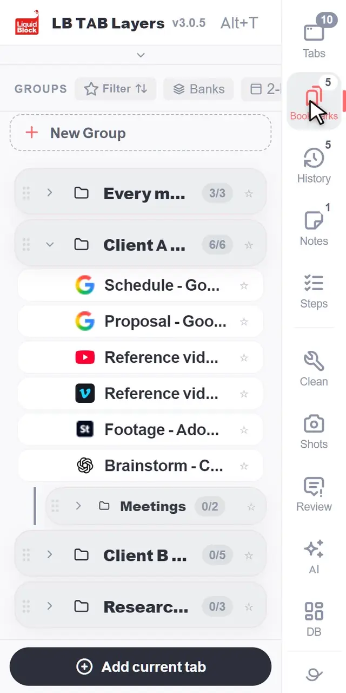
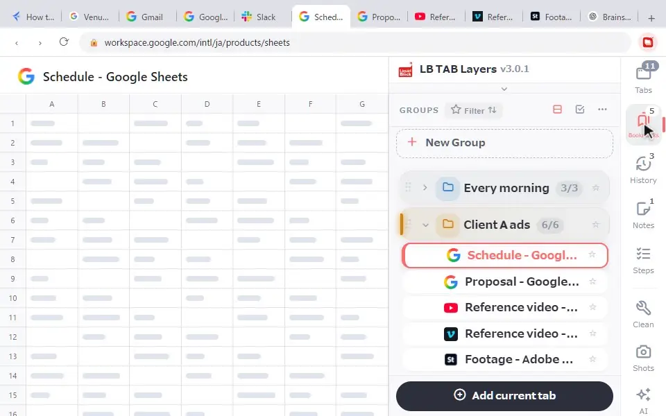
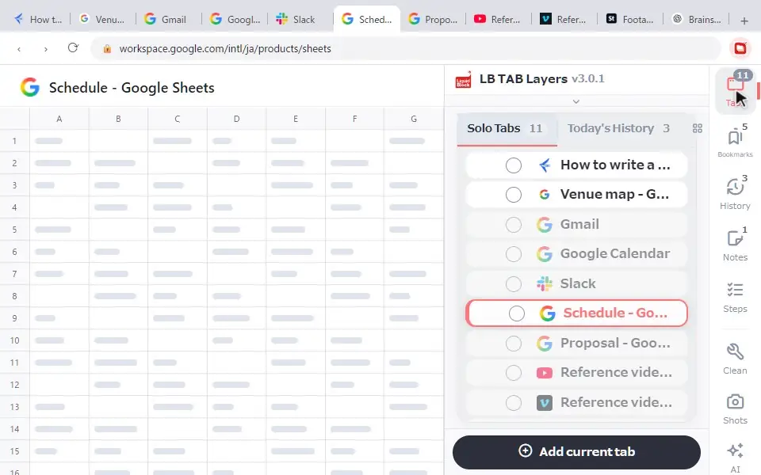

Before you open anything new, press Ctrl+Shift+T (⌘+Shift+T on a Mac). Chrome often brings back the whole previous window. If it doesn’t, open the ⋮ menu → History and look under Recently closed, then search your full history with Ctrl+H. If it keeps happening, set Chrome to Continue where you left off, and save tabs you need for days as bookmarks.
Chrome restarted for an update, your computer rebooted, or Chrome froze and closed. You open it again and every tab you had is gone. It happens to everyone, and most of the time the tabs can be found. The trick is to check things in the right order.
First: don’t start opening new tabs
The natural reaction is to search for the pages again. Wait a moment:
- Opening and closing new tabs pushes your old window further down the Recently closed list.
- Quitting and reopening Chrome again can replace the “previous session” with the empty one you have now.
Leave the screen as it is and work through the steps below.
If Chrome opened with just one new tab
When Chrome didn’t shut down properly, it may show a message with a Restore button right after it starts. If you see it, click it. That usually brings back all your tabs. If there is no message, or you already closed it, try these in order.
1. Press Ctrl+Shift+T
Press Ctrl+Shift+T (⌘+Shift+T on a Mac). If the last thing Chrome “closed” was your whole window, it comes back with all of its tabs. If it works, stop there. Pressing again reopens older closed tabs too. More on this shortcut in how to reopen closed tabs in Chrome.
2. Look in History → Recently closed
Open the ⋮ menu at the top right and point to History. The Recently closed section lists tabs and windows you closed lately. A window shows up as one entry with a tab count, such as “5 tabs”. Click it to reopen the whole window at once.
3. Search your full history
Still nothing? Press Ctrl+H (⌘+Y on a Mac) to open the History page. Pages are listed by date, and the search box at the top finds them by a word from the title or the site name. You will reopen them one by one, but the pages themselves are there.
If you have tabs, but not the ones you had
Sometimes nothing is lost. You are just looking in a different place.
- Another window. If you had several windows open, the restored one may be hidden behind others. On Windows, hover over the Chrome icon in the taskbar. On a Mac, right-click the Chrome icon in the Dock to see every open window.
- Another profile. If you use separate Chrome profiles, for example for work and personal, Chrome may have opened a different one. Check the profile picture at the top right. See separating work and personal tabs if you use more than one.
- An Incognito window. Incognito tabs cannot be brought back once closed, and they are not kept in your history.
If it happens every time Chrome restarts
Once is bad luck. Every time means a setting is worth checking.
1. Check the startup setting
Open Chrome’s Settings → On startup and choose Continue where you left off. If it is set to Open the New Tab page, Chrome starts with a blank tab every time. More options are in opening pages when Chrome starts.
2. Close Chrome the normal way
Chrome restores your session best when it was closed properly. Holding down the power button or restarting a frozen computer can leave nothing to restore. When Chrome asks you to restart for an update, use its own Relaunch button, which normally reopens your tabs.
3. Check your extensions
Extensions that close, suspend or merge tabs automatically can also make tabs vanish. If you have one, turn it off for a while and see if the problem stops.
Menu names and positions can change between Chrome versions. If something looks different on your screen, search for the same words in Chrome’s settings.
Restoring is good. Saving is better.
Chrome’s restore is handy, but whether it works depends on how Chrome was closed. For tabs you need for days, such as a project, research or something you will finish next week, don’t rely on restore. Save them as bookmarks. Bookmarks survive restarts, crashes and updates.
LB TAB Layers is a side panel extension built around that idea. Press Alt+T (Option+T on a Mac) to open it, create a group with New Group, and save tabs into it: Add current tab on a group, or right-click a tab and choose Save to Folder. Every group is a Chrome bookmark folder inside an “LB TAB Layers” folder, so your saved tabs stay even if you remove the extension.

After a restart, open the panel and click ▶ on a group. All its tabs open again as a Chrome tab group with the same name and color. When you are done for the day, ■ closes them, and they are still saved for tomorrow.

Tabs you never saved: today’s history
Tabs you never put in a group are not saved by LB TAB Layers. For those, use Chrome’s steps above. If the pages were from today, History in the panel’s side column lists the pages you visited today, newest first, and one click opens them again. Today’s history is a PRO feature and is free during the 90-day trial.

If you use LB TAB Layers and a group seems missing
- Check you are in your usual Chrome profile. Each profile has its own bookmarks.
- Open Chrome’s bookmark manager (Ctrl+Shift+O, ⌘+Option+B on a Mac) and look inside the “LB TAB Layers” folder. Your saved tabs are ordinary bookmarks there and can be opened directly.
Habits that make restarts painless
- Save at the end of a task. Put the tabs in a group, close them with ■, and reopen with ▶ the next morning.
- Save before an update restart. Chrome usually warns you before it needs to relaunch. That is a good moment to save anything important.
- Back up now and then. Chrome’s bookmark manager can export your bookmarks to a file, and LB TAB Layers has Export (JSON) in its settings.
Time spent hunting for tabs that may or may not come back is time you didn’t need to lose. Once they are saved, a restart is just a restart.
Frequently asked questions
Q. My Chrome tabs disappeared after a restart. What should I do first?
Don’t open new tabs or restart Chrome again. Press Ctrl+Shift+T (⌘+Shift+T on a Mac). If the previous window doesn’t come back, check ⋮ → History → Recently closed, then search the History page with Ctrl+H (⌘+Y on a Mac).
Q. I use “Continue where you left off”, but my tabs still didn’t come back. Why?
If Chrome didn’t close properly, for example after a forced shutdown or a frozen restart, there may be nothing to restore. Also check other Chrome windows and other profiles, since the tabs may be there.
Q. Can I get back tabs from an Incognito window?
No. Incognito tabs are not kept in your history, so they cannot be restored once closed.
Q. Do tabs saved in LB TAB Layers disappear when Chrome restarts?
No. Saved tabs are Chrome bookmarks. Open the panel with Alt+T and click ▶ on a group to open them all again.
▶ See it in action
Managing bookmarks and tabs together in the sidebar. (The video shows the Japanese UI.)
Restarts stop being scary.
Save tabs by project as Chrome bookmarks and reopen them with ▶. No account needed · Every feature free for 90 days
Add to Chrome — it's free →